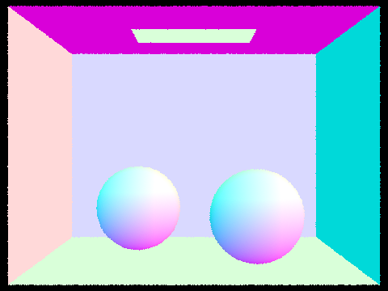

CBspheres.dae with normal shading


In this assignment, I learned and explored multiple ray-tracing concepts to implement the core routines of a physically-based renderer, including ray-scene intersection, acceleration structures, and physically based lighting and materials. Through implementing ray generation and scene intersection, I practised transforming coordinates across camera space and world space, produced pixel samples, as well as ray intersection tests for triangles and spheres. I constructed a bounding volume hierarchy to accelerate the path tracer and allow it to render more efficiently -- in this process, I learnt how to test for intersections in the bounding box and BVH itself. After being able to render more efficiently, I produced realistic shading and simulated light transport within the scene through introducing the bidirectional scattering distribution function, and building in zero-bounce illumination and direct lighting. In addition to direct illumination, I implemented global illumination using indirect lighting effects. Finally, I learned how to use adaptive sampling to remove noise in areas which require higher sampling rates to converge. Overall, I was able to build a program using a pathtracing algorithm to produce a renderer.
Reflecting on my implementation and process, I encountered problems with my intersection functions which would only reveal themselves later in the project, mostly to do with setting bounds for the rays. I also struggled briefly with the recursive step in constructing the BVH, initially implementing such that I created an infinite loop. While rendering the multiple-bounce images for Part 4, at first my outcomes for max ray depth at 2, 3, and 100 appeared the same. Most of my problem-solving relied on looking for people who had encountered similar situations on Ed. I was also able to discuss conceptual implementation details with other friends within the class. Despite starting early, I hit many roadblocks with waiting for my images to render as it interrupted my workflow with being unable to work on and sufficiently test other parts of the project. I also wasn't able to SSH into the hive machines due to connection issues, and was unsure how to run the project given that I had been using XCode while the machines were using Windows.
Within the rendering pipeline, instead of casting light rays for an image (similar to the physical model of light) we generate camera rays to produce an image for the frame seen through the camera. These rays are cast for every pixel within the image, and checked for intersections with primitives within the scene to calculate the correct amount of light (as well as shadow) in the final result.
For ray generation, coordinates in image space correspond with coordinates within a virtual camera sensor in camera space. We generate a ray which originates at the camera in camera space, and intersects with the point in the camera sensor which corresponds with the image coordinates. I implemented the algorithm for ray generation given coordinates in the image space, first transforming them to camera space to generate the ray, and then transforming this into a ray in world space. I also implemented generating samples of each pixel in image space, so that we can estimate the integral of the radiance over a pixel using the Monte Carlo estimate.
We check for primitive intersections to test for when rays intersect with objects within the scene, which allows us to understand if the object is obscured by another object, is hit directly by light, or might cast a shadow. Primitives may include triangles, planes, and spheres. In this part, I implemented ray-triangle and ray-sphere intersection tests.
The ray-triangle intersection algorithm I implemented uses the three points of the triangle and the ray's origin along with the Möller Trumbore algorithm to find the time of intersection with the triangle. This also produces b1 and b2 which can be used to find the weights needed to interpolate the vertex normals of the triangle with barycentric coordinates. The found normal and time of intersection are used to populate the intersection struct.
I implemented a BVH to accelerate the rendering process and especially allow faster rendering for models which contained a large number of primitives. The BVH quickly renders by testing for intersections in a hierarchy of bounding boxes; if a large bounding box containing an individual primitive has no ray intersection, there is no need to spend computational power iterating through and checking that individual primitive (or every other individual primitive within that bounding box, for that matter.) This makes the rendering process much more efficient.
To construct my BVH, I first iterate through all primitives given to sum an average of their centroids and count the number of primitives, while building a bounding box containing all primitives. If the number of primitives is less than the maximum leaf size, I make a new leaf node with this bounding box and return the node. Otherwise if the number of primitives is larger than the maximum leaf size, I iterate through each primitive again and re-order the list of primitives in place so that according, to my heuristic, primitives are either sorted to the left or right side of the primitive array. The heuristic I chose was simply whether the x coordinate of the primitives' centroids was smaller or larger than the x coordinate of the average centroid — I chose this heuristic just for a simple option to construct the BVH. I call the method for constructing the BVH recursively on these left and right partitions of the primitive array, and assign the resultant nodes to the respective left and right child nodes of the current node.

The addition of the BVH sped up the rendering considerably. For example, to render CBspheres.dae (14 primitives) it took 0.3253s, and 0.1035s with BVH. To render CBgems.dae (252 primitives), it took 2.0223s, and 0.1044s with BVH. For banana.dae (2458 primitives), it took 52.4027s without BVH, and 0.1872s with BVH. Rendering cow.dae (5856 primitives) took 69.9036s without BVH and 0.3537s with the BVH implementation. For CBbunny.dae (28588 primitives), it took 260.1006s to render, and 0.3383s to render with BVH. For CBdragon.dae (100012 primitives), CBlucy.dae (133796 primitives), and wall-e.dae (240326 primitives), the BVH implementation took 0.9885s, 0.9033s, and 4.3101s respectively. The rendering for these last three models without BVH was too slow for my laptop and my patience. Overall, it can be seen that the BVH implementation can be at least up to over 700 times faster (in the case of CBbunny.dae). This was not consistent for all models, which makes sense given that the efficacy of my partitioning heuristic can vary with different scenes. However, the BVH implementation was consistently faster, and more effective with an increasing number of primitives. For example, CBspheres only contained 14 primitives and was only three times faster, since the difference in not testing less than 14 primitives is much less relatively significant than the efficiency in skipping (some number less than) 240326 primitives for wall-e.dae.
I implemented direct illumination through two methods, uniform hemisphere sampling and importance light sampling. I used the Monte Carlo integration to estimate the direct lighting for these implementations. For uniform hemisphere sampling, where we sample uniformly in a hemisphere surrounding the ray intersection, I loop for the number of total samples and create a new ray with the hit point as the origin on each iteration. I test to see if this new ray intersects with the BVH; if so, I obtain the incoming radiance (the material's emitted light) and calculate the irradiance by multiplying this emission by the cosine factor and resulting BSDF. I sum this result across num_sample loops, and multiply this result by a factor of 2*PI, before dividing by the total number of samples. This result is returned to produce direct light from uniform hemisphere sampling.
For importance sampling lighting, we sample only from lights instead of in a hemisphere. For each light, I check if it is a point light source; if so, I can save time by only sampling it once. If not, it is sampled num_sample times. For each sample, I find the emitted radiance, as well as the sampled direction between the hit point and light source, the distance between the point and the light source in that direction, and the value of the probability density function evaluated at that direction. When this direction is converted from world to object space, I can check if the Z coordinate is positive and so the result will be visible. If so, I generate a new ray with the sampled direction and hit point as the origin, and set the ray's minimum intersection time to an epsilon constant for numerical precision issues. The maximum intersection time is the distant to the light minus this epsilon constant. Like hemisphere sampling, if there is an intersection between the BVH and this new ray, I add it to a sum which is ultimately divided by the number of samples for the Monte Carlo estimation and returned as the resultant direct lighting.
Seen below, in light sampling there is a reduction in noise levels in soft shadows when rendering with more light rays. We can see that with 1 light ray there is a lot of noise including that visible on the walls, while with 64 light rays the walls of the Cornell box practically appear smooth. We can see that the difference is more drastic at lower light samples -- there is a significant reduction in noise between 1 and 4 light rays, while the larger value difference of 16 and 64 light rays seems to actually produce less significant results.
We can see that in the results between uniform hemisphere sampling and importance light sampling, uniform hemisphere sampling retains more noise. In comparison, rendered with the same amount of light rays and samples per pixel, the importance light sampling has very little perceptible noise and appears smooth. In hemisphere sampling, there appears to be a glow around the white ceiling light in the Cornell box, while this is gone in importance sampling. This is because the area lights in importance sampling has directionality, while in hemisphere sampling we don't model this behaviour. Other than these differences, the results produced in terms of the radiance of the lights appear almost identical between the two methods.
To achieve full global illumination, I implemented an indirect lighting
function to add the visual richness from indirect lighting effects. I
initially call the function for one-bounce radiance, and then wrote the
function to recursively call itself to estimate higher "bounces". For
at_least_one_bounce_radiance, if the ray depth of the ray
given is 1, I return one-bounce radiance. Otherwise, if the ray depth is
the max ray depth (the first call of the function) or depending on a
random continuation probability 0.65 (given by the Russian Roulette
method) to prevent infinite recursion, a new ray is generated with an
origin of the current hit point and a decremented ray depth. If this new
ray intersects the BVH, the function recursively calls itself with the ray
and multiplies this result with the BSDF value as well as the cosine
factor. It is divided by the pdf of the sampled incident direction, and
also the probability of continuation if this is not the first call of the
function to produce the bounce. This bounce is added to the value
ultimately returned after recursing through the cumulative light bounces.
CBspheres.dae below has been rendered with only direct illumination and only indirect illumination (and zero-bounce). It can be seen that the direct lighting is brighter than indirect, which relies on reflected light, and so is also a pure white light from the white ceiling light. The indirect lighting, after reflecting off coloured surfaces, bounces as soft red and purple reflections from the walls. Since they are resulting from bounces and not the direct light, they are not as bright and have lost radiance.
CBbunny.dae below has been rendered with different values for
max_ray_depth. At zero, the result is zero-bounce
illumination (just the white ceiling light) while at 1, the result is
one-bounce illumination. The shadows here are not coloured, since the
light doesn't bounce off and reflect the surrounding surfaces. At a
maximum ray depth of 2, we can see some coloured reflection in the shadows
and the scene overall has brighter shadows; at 3, the scene is slightly
brighter, and the shadows also very slightly more intense in colour. We
can see that at a maximum ray depth of 100, it is overall still slightly
brighter than a value of 3, but the result is extremely similar. This
shows that after a few bounces, the light that can be reflected back is
limited and does not produce much difference.
Below, banana.dae is rendered with different values for samples per pixel. We can see that by increasing the samples per pixel, we can reduce noise in the image.
Adaptive sampling is a sampling process which avoids the issue of using a fixed (high) number of samples per pixel by concentrating the samples in the more difficult parts of the image. Since increasing the number of samples per pixel can eliminate noise, this is a method which can remove noise in areas where pixels only converge with high sampling rates, while reducing computational power by taking less samples where the pixels converge faster at a lower sampling rate.
I implemented adaptive sampling by keeping a count of how many samples
have been traced through a pixel so far. As the sample loop continues, I
compute the illuminance x of each sample and store the variables
sum of x and sum of x2 needed to compute the mean
and variance of the samples so far. Every samplesPerBatch I
compute a variable I = 1.96 * standard deviation / sqrt(num samples so far) and test if it is less than or equal to maxTolerance *
mean. If so, the pixels have converged and I can terminate the loop with
the current number of samples sufficient for this pixel. If not, it
continues sampling until either the maximum number of samples has been
taken or the pixels converge.